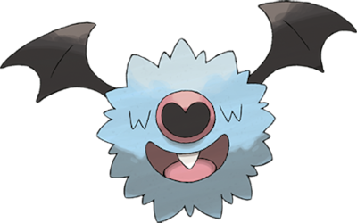

Woobat

Altura = 0.4m
Peso = 2.1Kg
Categoria = Morcego
Habilidades = Unaware
- Enquanto estiver dentro de uma caverna, se você olhar para cima e ver muitas marcas em forma de coração revestindo as paredes, é uma evidência de que Woobat vive lá.
- Ele emite ondas ultrassônicas enquanto flutua, procurando por sua presa - Pokémon inseto.